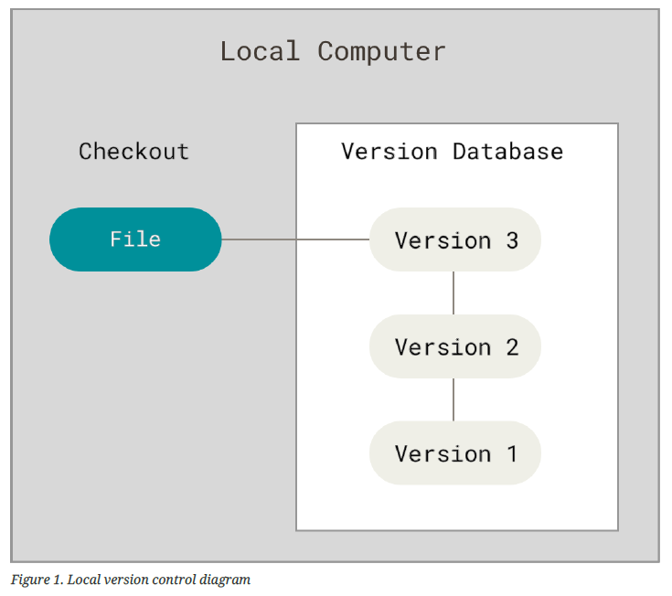
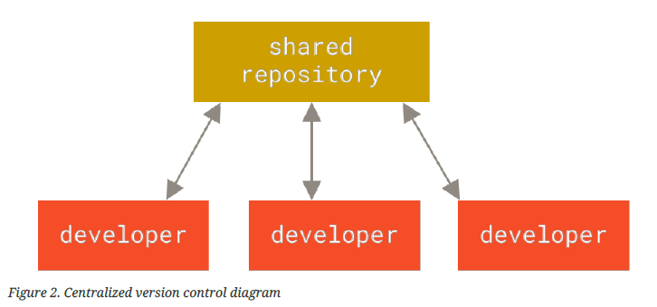
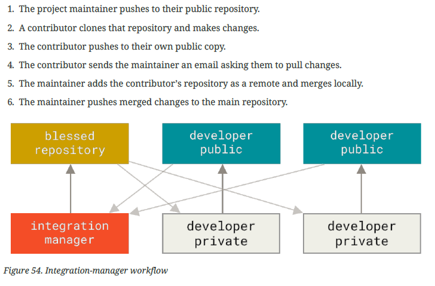
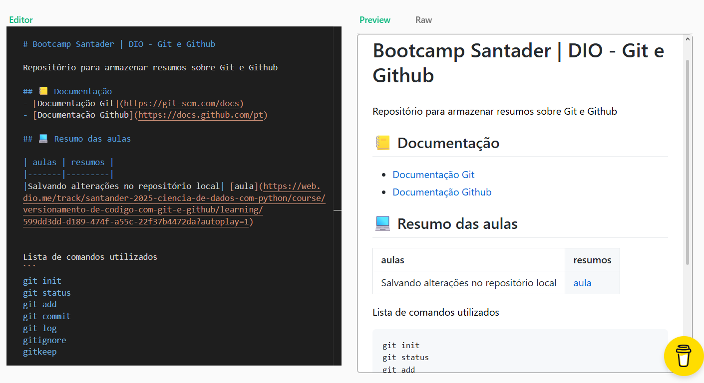

GitHub

Colaboração, Versionamento e Tecnologia
Seminário – Sociedade e Tecnologia
Autores:
Lucas • Giovanna • Rafael
O que é o GitHub?
- Plataforma de hospedagem de código e arquivos na nuvem.
- Utiliza o Git para controle de versões.
- Permite colaboração entre desenvolvedores do mundo inteiro.
- Funciona como uma rede social para programadores.
Git x GitHub
Git

|
GitHub
|
|---|---|
| Sistema de controle de versão | Plataforma online |
| Controla alterações | Hospeda repositórios |
| Instalado localmente | Utilizado pela internet |
Controle de Versão
- Armazena todo o histórico do projeto.
- Permite recuperar versões anteriores.
- Evita perda de trabalho.
- Facilita a colaboração entre equipes.

Branches
Branches são ramificações do projeto que permitem criar novas funcionalidades sem afetar a versão principal.
Main → Nova Branch → Testes → Integração
Fork e Colaboração
- Fork cria uma cópia de um projeto.
- Permite contribuir em projetos de terceiros.
- Facilita o desenvolvimento open source.
- Estimula o aprendizado colaborativo.

Pull Requests
- Proposta de alteração em um projeto.
- Permite revisão de código.
- Recebe sugestões de melhorias.
- Somente alterações aprovadas são integradas.

Organização de Projetos
- Issues: tarefas, bugs e ideias.
- Projects: organização estilo Kanban.
- Wiki: documentação do projeto.
- README: apresentação e instruções.

GitHub Pages
- Hospedagem gratuita de sites.
- Ideal para portfólios.
- Permite publicar documentação.
- Transforma projetos em páginas públicas.
Esta apresentação está hospedada usando GitHub Pages.
Termos Importantes
- Repository: local onde o projeto fica armazenado.
- Commit: salvamento de alterações.
- Branch: versão paralela do projeto.
- Pull Request: solicitação de integração.
GitHub Além da Programação
- Organização de documentos.
- Controle de trabalhos acadêmicos.
- Projetos colaborativos.
- Registro do histórico de alterações.
Conclusão
O GitHub é muito mais do que uma plataforma para programadores. Ele é uma ferramenta de colaboração, organização, compartilhamento de conhecimento e construção profissional.